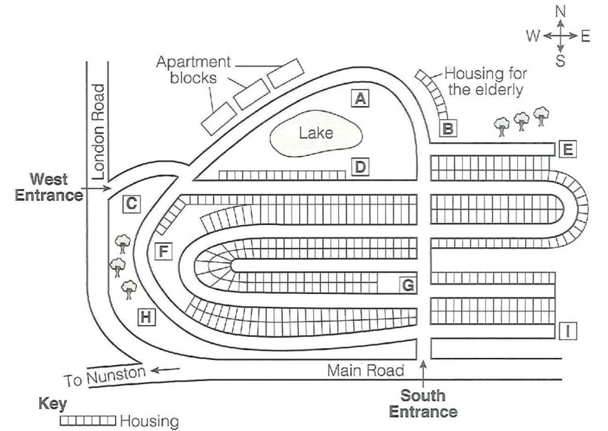

Cambridge IELTS 18
Time: approx. 30 minutes
Instructions
Digital recreation of Cambridge IELTS Listening Test 2.
Type answers in the gaps. Click options for multiple choice.
Print this page for paper-like practice.
Questions 1–5: Complete the notes below. Write ONE WORD ONLY for each answer. Questions 6–10: Complete the table below. Write ONE WORD AND/OR A NUMBER for each answer.
Questions 1 – 5
Complete the notes below. Write ONE WORD ONLY for each answer.
| Section | Details |
|---|---|
Benefits |
•1provided for all staff•2during weekdays at all Milo's Restaurants•3provided after midnight |
Person specification |
• must be prepared to work well in a team• must care about maintaining a high standard of4• must have a qualification in5 |
Questions 6 – 10
Complete the table below. Write ONE WORD AND/OR A NUMBER for each answer.
| Location | Job title | Responsibilities include | Pay and conditions |
|---|---|---|---|
66Street |
Breakfast supervisor |
Checking portions, etc. are correctMaking sure7is clean |
Starting salary £8per hourStart work at 5.30 a.m. |
City Road |
Junior chef |
Supporting senior chefsMaintaining stock and organising9 |
Annual salary £23,000No work on a10once a month |
Questions 11–12 and 13–14: Choose TWO A–E. Questions 15–20: Label the map A–I.
Click to select (max 2)
Click to select (max 2)

Questions 21–24: Choose A, B or C. Questions 25–26: Choose TWO A–E. Questions 27–30: Matching A–F.
Click to select (max 2)
Complete the notes below. Write ONE WORD ONLY for each answer.
IELTS Listening Test 2 • Cambridge IELTS 18 • Practice recreation (content from official PDF)